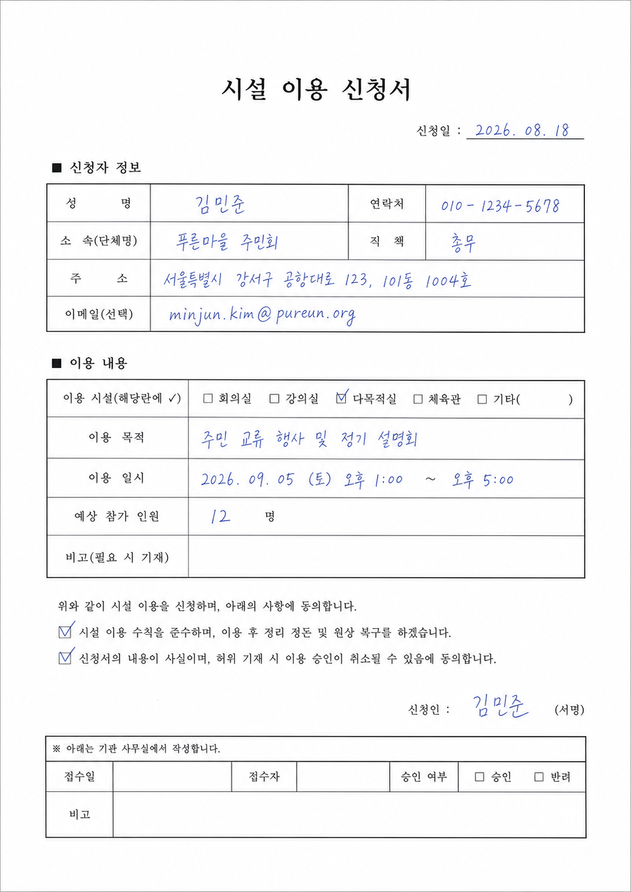

♙현재 기준
사용자
5전체 등록3활성
우리 회사의 양식·문서·AI OCR 사용 현황을 확인합니다.
| 문서 번호 | 양식 | 소유자 | 상태 | 최근 일시 |
|---|---|---|---|---|
| 13051 | 시설 이용 신청서 | 김민준 | 인쇄 | 2026.08.18 15:02 |
| 13048 | 시설 이용 신청서 | 김민준 | 작성 | 2026.08.18 14:32 |
| 13049 | 시설 이용 신청서 | 이서연 | 완료 | 2026.08.17 11:08 |
현재 서비스 사용 상태인 고객사
전체 고객사에 등록된 계정
현재 서비스 사용이 가능한 계정
최근 30일 이내 새로 등록
최근 30일 이내 사용 종료
| 고객사 | 등록 사용자 | 활성 사용자 | OCR 문서 | OCR 페이지 | 성공률 | 월 한도 |
|---|---|---|---|---|---|---|
| ITSUWA이츠와 | 18 | 16 | 1,240 | 1,320 | 98.5% | 82% |
| KOTOBUKI고토부키 | 12 | 10 | 580 | 740 | 97.9% | 46% |
| YAMATO야마토 | 9 | 8 | 412 | 505 | 99.1% | 38% |
빈 양식을 데이터 수집 템플릿으로 만들고 테스트합니다.
| 양식 ID | 양식명 | 페이지 | 필드 | 프린트 상태 | 등록일 | 수정일 | 작업 |
|---|---|---|---|---|---|---|---|
| FORM-002 | 시설 점검 기록지facility_inspection | 1 | 6 | 편집 미완료 | 2026.08.19 09:20 | 2026.08.19 10:05 | |
| FORM-001 | 시설 이용 신청서facility_application | 1 | 11 | 프린트 허용 | 2026.08.14 10:20 | 2026.08.18 16:40 |
인쇄된 문서부터 작성·검수 완료된 데이터까지 확인합니다.
| No. | 양식 | 페이지 | 소유자 | 상태 | 인쇄 / 작성 일시 | |
|---|---|---|---|---|---|---|
| 13051 | 시설 이용 신청서facility_application | 1 | 김민준jimin.kim@neolab.net | 인쇄 | 2026.08.18 15:02— | |
| 13048 | 시설 이용 신청서facility_application | 1 | 김민준jimin.kim@neolab.net | 작성 | 2026.08.18 13:532026.08.18 14:32 | |
| 13049 | 시설 이용 신청서facility_application | 1 | 이서연seoyeon.lee@neolab.net | 완료 | 2026.08.17 10:102026.08.17 11:08 | |
| 13039 | 시설 이용 신청서facility_application | 1 | 박준호junho.park@neolab.net | 완료 | 2026.08.16 15:222026.08.16 16:45 |
USB로 연결된 스마트펜의 필기 데이터를 문서 조회 목록으로 가져옵니다.

Page 1선택한 필드를 한 행의 열 스키마로 사용합니다. 화면에는 여러 행이 보이지만 필드 정의는 한 번만 저장됩니다.
inspection_rows[] → { }